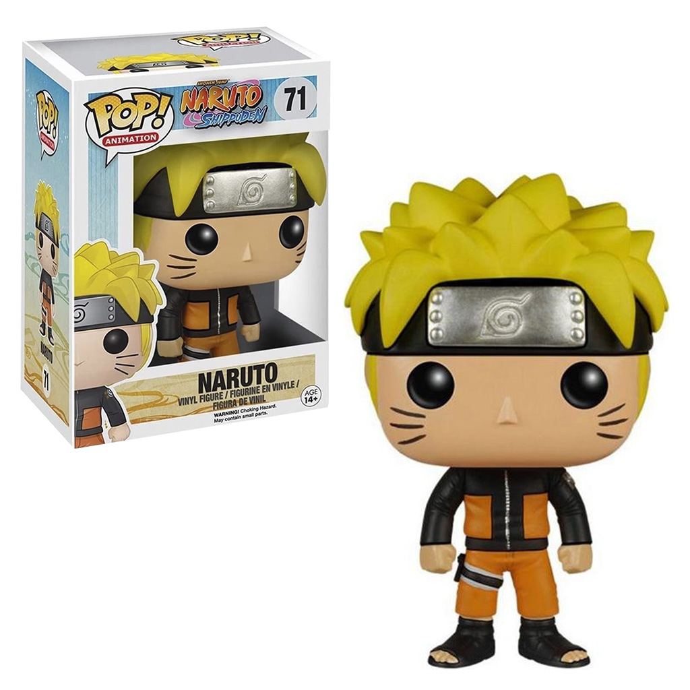

Funko Pop Animation Naruto Shippuden - Naruto 71
Preço:R$128
Descrição:
A empresa americana Funko afirma que “todo mundo é fã de alguma coisa”. Portanto, se dedica à criação de figuras colecionáveis para gerar felicidade para fãs de todas as idades.Materiais nobres As figuras de ação são feitas de vinil isso garante que elas sejam agradáveis e suaves ao toque, diferenciando as diferentes texturas e relevos do corpo das personagens. Ideal para colecionadoresUma das atividades que você poderá fazer com esse tipo de figuras é colecionar elas e armazená-las num lugar especial. À medida que você conheça mais e mais, sua coleção crescerá e se tornará mais variada. Com uma caraterística especialAs figuras bobblehead são diferentes de todas as outras. Sua cabeça grande em relação ao resto do corpo faz com que se destaquem entre as outras figuras que você pode colecionar e, sem dúvida, serão suas favoritas.Aviso legal• A idade mínima recomendada para usá-la é 14 anos.Envio para todo o país Saiba os prazos de entrega e as formas de envio . Calcular o prazo de entrega Último